One clear promise ("personalized soundscapes, backed by neuroscience"), then it shows the product across every device instead of explaining. Calm dark field, a single button, zero hype.
Steal for Zodiac
Personal sound plus real science is almost our exact pitch. Borrow the quiet confidence, and the abstract "sound made visible" graphic, as a model for our frequency reveal.
endel.io
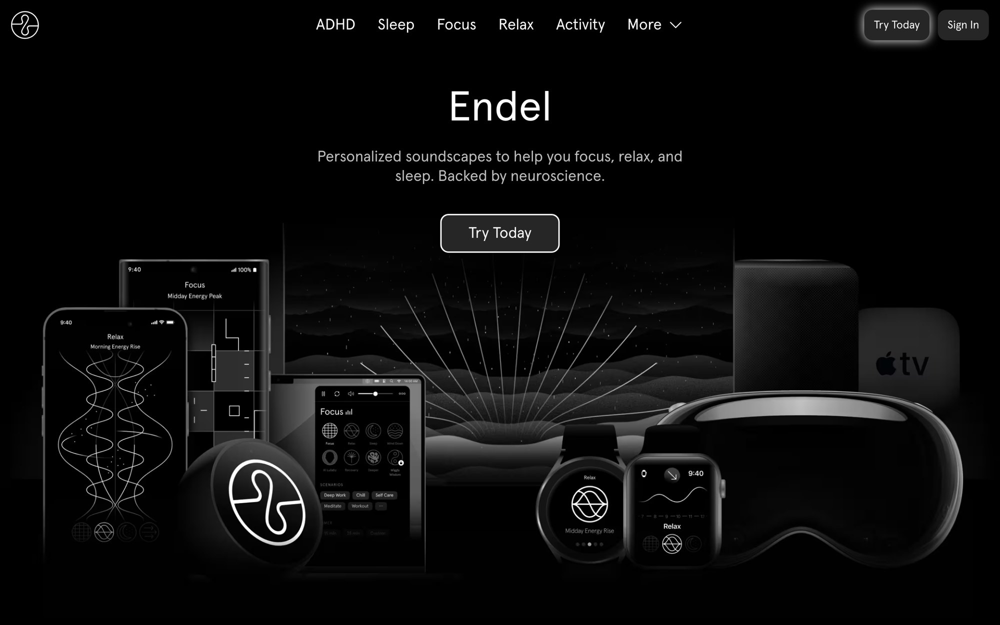
02Co–Starcostarastrology.com
Astrology · editorial minimal
What's great
A serif wordmark and one sentence carry the hero. Then three phone screens do the showing. Nothing competes, and the restraint reads as authority.
Steal for Zodiac
We have a strong serif and real app screens now. Borrow the discipline: one idea, lots of space, let the type and screens speak. We run warmer, so keep the confidence and drop the cold.
costarastrology.com
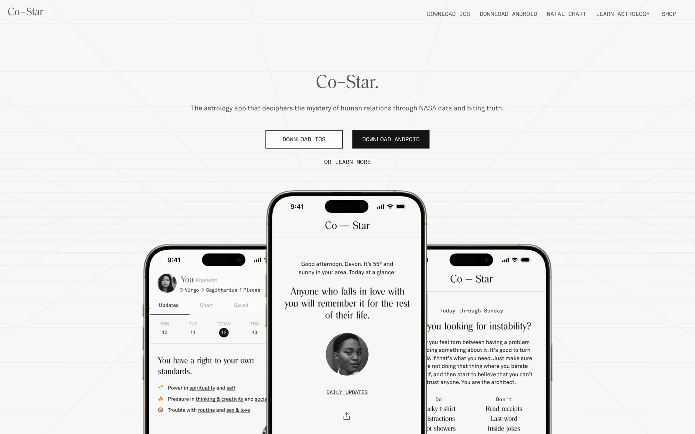
03Aesopaesop.com
Premium retail · editorial
What's great
The master of space and calm. One product moment, given room, in a serif voice that never raises its tone. Premium because it is quiet, not loud.
Steal for Zodiac
This is the bar for "calm and premium," the words in our own design system. Borrow the air: fewer elements, more space, one focal point per view.
aesop.com
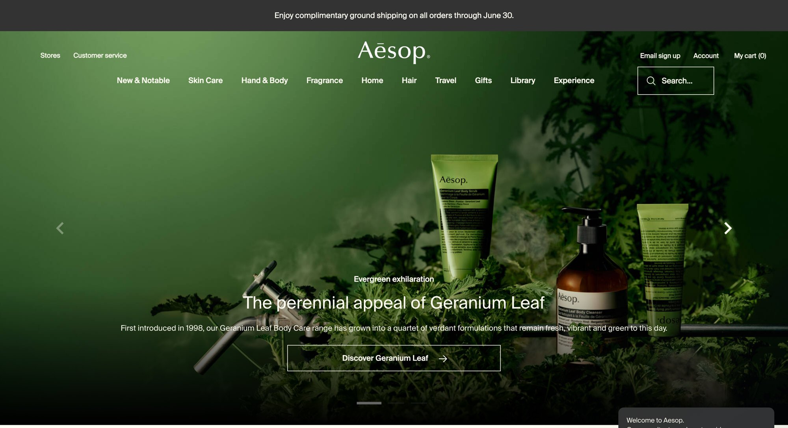
04Maudegetmaude.com
Modern wellness · warm
What's great
Warm amber light, a lowercase serif that feels intimate and sure of itself, product photography that glows. Premium without a single cold edge.
Steal for Zodiac
This is our warmth, proven out. Our cream-paper world can feel this rich. Borrow the warm light and the lowercase-serif intimacy for the hero and the testimonial cards.
getmaude.com
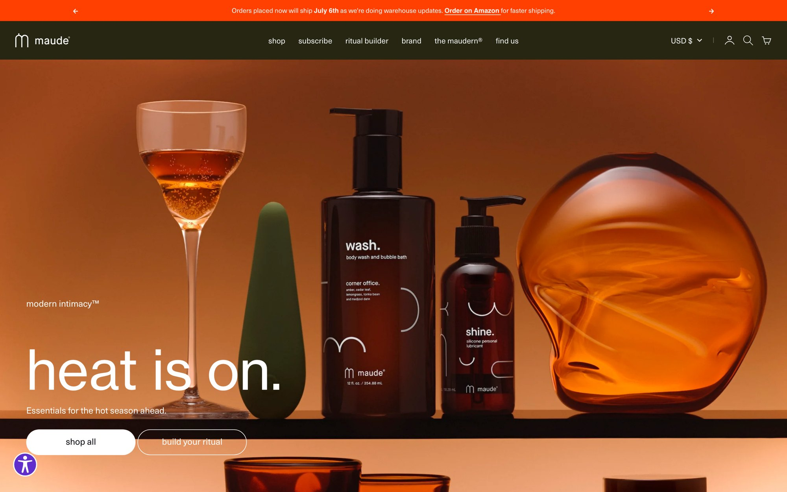
05Ouraouraring.com
Premium product · restrained
What's great
A two-word headline ("Subtle. Power.") and one hero shot on a quiet field, with a single tiny accent (the ladybug) carrying all the color. Confidence through subtraction.
Steal for Zodiac
The single-accent move is our violet rule, made visual. Borrow the two-word serif hero and the discipline of one color doing all the work.
ouraring.com
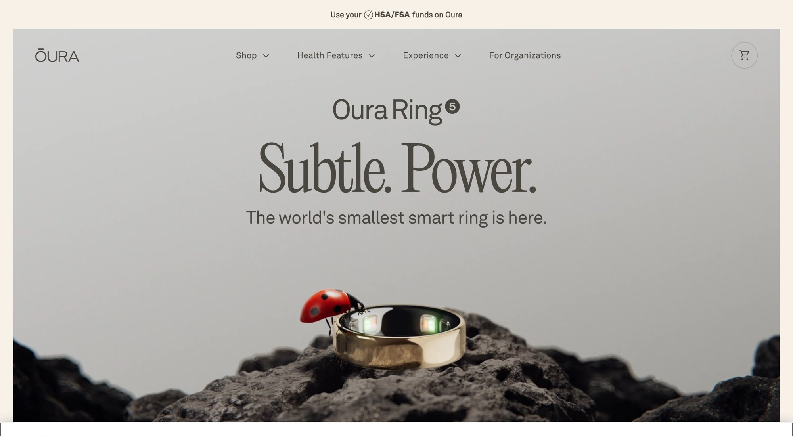
06WorkWithShadowworkwithshadow.com
Believer-adjacent wellness · dark, one warm accent · the homepage read (quiz walk in Part four)
What's great
A dark charcoal field with one terracotta accent doing every job: the accent word in "Meet Your True Self," every Start Now button, nothing else colored. Moody double-exposure portraits carry the emotion, benefit cards are full-bleed image + title + one line, and it educates first (a Jung paragraph before any sell). Every section ends on the same Start Now, so the whole page funnels into one action: the quiz.
Steal for Zodiac
The one-accent discipline is our violet rule proven on a dark surface. Borrow educate-the-believer-first before the ask, and every-path-to-one-action (our quiz IS the funnel too). And the gap to exploit: the imagery is stock-moody and visually anonymous. Our cymatic disc art is the ownable asset this page wishes it had.
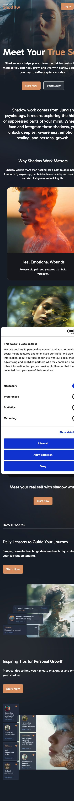
Scroll inside the phone — the full homepage, hero to footer.
Part two
How great pages tell a story down a phone.
Our pages are long and the quiz is 80 mobile screens, so the real craft is carrying a lot of copy down a phone and making it move. Full mobile scrolls below, with how each one does it. Scroll each phone.
01Endelendel.io
Functional sound · our exact cousin
1Hero is the product: one promise and a play button over an abstract sound visual.
2Borrowed trust, instantly: a row of press logos before any ask.
3The proof beat: "backed by neuroscience" plus a four-number stat block.
4Repeating feature beats, all the same shape: short headline, two lines, one graphic.
Steal for Zodiac
Our category's template. Calm, dark, one idea per beat. Borrow the rhythm: promise → borrowed trust → the science → repeating feature beats.
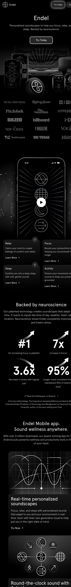
endel.io · scroll the page
02brain.fmbrain.fm
Functional sound · the same play, again
1Hero: "Music made for Motivation," dark gradient, one button.
2Trust, two ways: "as seen on" logos, then a real customer post.
3Mechanism, shown: "achieve deep focus" over a brainwave graphic, then the science line.
4The same skeleton: a stat block, feature beats, social proof, one CTA.
Steal for Zodiac
Proof it isn't a fluke. Two leaders, the identical skeleton. Follow it, win on craft and warmth instead.
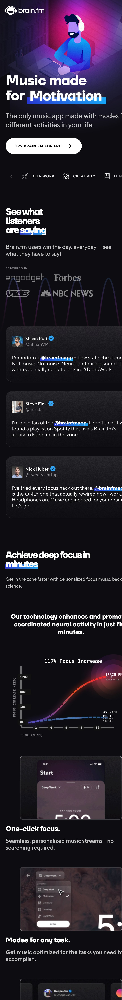
brain.fm · scroll the page
03Waking Upwakingup.com
Meditation + philosophy · calm, light, no woo
1Airy hero: "Your last meditation app," soft sky imagery, lots of space.
2Quiet proof: a "100,000+" reviews line, not shouted.
3The depth, organized: "Explore Topics" and "Traditions" as a calm grid.
4Authority by face: "100+ teachers" with a real portrait to close.
Steal for Zodiac
The calm, light version, and the closest tone to where Zodiac lives. Borrow the airy sectioning and the topic grid for our depth content.
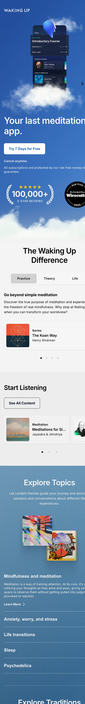
wakingup.com · scroll the page
04Headspaceheadspace.com
A lot of copy · borrow the structure, leave the color
1Answer first: the hero drops straight into an FAQ accordion.
2One job per section, alternating background colors do the separating.
3Stacked proof: testimonial cards, then a "4,000+ organizations" stat.
4Library, then one big CTA to close.
Steal for Zodiac
The discipline that keeps a copy-heavy page navigable: one job per section, accordions for depth, stacked proof. We keep our calm cream and one violet, not the loud blocks.
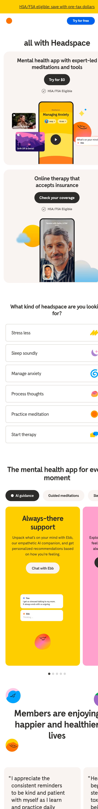
headspace.com · scroll the page
The takeaway
The skeleton they all share.
Strip the pages down and the same spine appears. This is the proven shape for a long page in our world. Our job is to run it with our warmth and our restraint.
Each screen-height does a single thing. Type-heavy and image-heavy beats alternate so the scroll has a pulse.
Show the mechanism
Nobody explains the science in a paragraph. They show one graphic (a waveform, a brainwave) and move on. Our frequencies want the same.
Space marks the sections
On a phone the reader never gets lost because space (and on Headspace, color) signals a new idea. Our hierarchy law, proven on mobile.
Part three
Long copy that stays easy to read.
When a page has a lot to say (our sales arc, the deep content on frequencies and bands), the typography does the work. A narrow column, a comfortable size, real space between paragraphs, and honest subheads. Three pros at it.
01iAia.net
Reading-typography essay · the beautiful end · in our calm lane
What's great
A single narrow column, a serif body with generous line-height, and a drop cap to open. The measure is tight (around 65 characters), so your eye never loses its place. It reads like a printed book, on the web.
Steal for Zodiac
The model for our deep content and any long read. One centered column, never full-width text, a comfortable 18 to 20px, and real air between paragraphs. Restraint is what makes it effortless.
ia.net
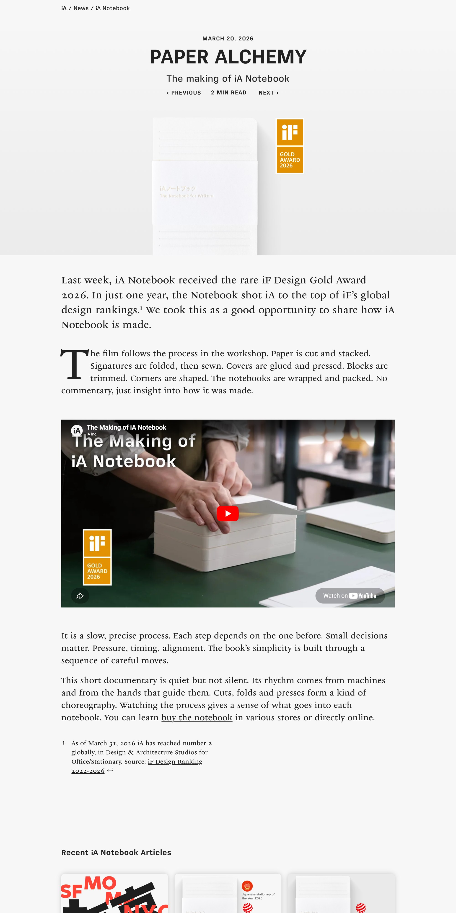
02Intercomintercom.com
Structured long-form · how to make a lot of copy navigable
What's great
A lot of practical copy stays navigable: a sticky table of contents down the side, a subhead every few paragraphs, and a comfortable measure. You always know where you are in a long read.
Steal for Zodiac
For our sales page and the FAQ-style depth. Break long copy with honest subheads, keep a sticky guide on the longest pages, and never let a paragraph run more than a few lines on screen.
intercom.com/blog
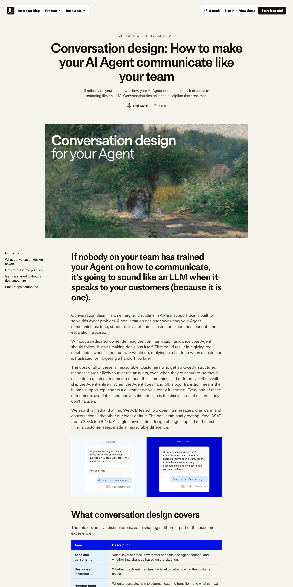
03Stripestripe.com
Clean editorial report · the credible end
What's great
Restrained measure even on a wide screen, a calm body, and charts and pulled quotes to break up the text and carry the proof. Professional without being stiff or dense.
Steal for Zodiac
When we present numbers (the study, the stats), this is the tone: a tight column, a clean chart, a pulled quote, lots of space. Credible because it stays calm.
stripe.com/blog
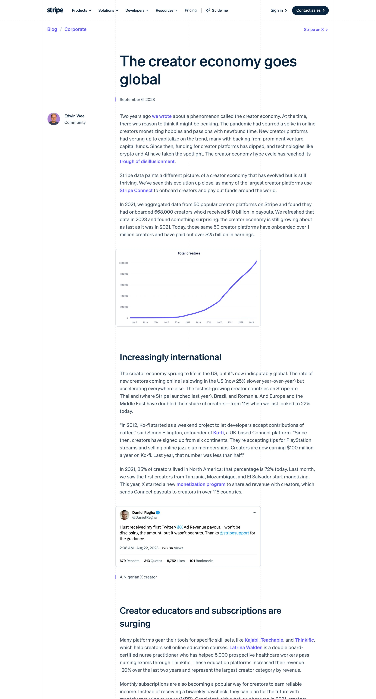
Tight measure. 60 to 75 characters a line. Cap the column even on a wide screen, the text never runs edge to edge.
Generous leading. Line-height around 1.6, with real space between paragraphs so the page breathes.
Subheads and texture. A subhead every few paragraphs, and a pull quote or a chart to rest the eye.
Part four
A quiz funnel in our lane, walked to the buy button.
WorkWithShadow (Jungian shadow work, believer-adjacent) walked live on 2026-07-01: homepage, 23 quiz screens, a four-minute "building your plan" sequence, the reveal, the offer, the checkout. The full screen-by-screen teardown lives in the vault (swipes/workwithshadow-quiz-funnel-teardown.md) and its moves are graded into the quiz pattern library. Below, the two public surfaces and the read.
01WorkWithShadowworkwithshadow.com
Quiz-is-the-funnel · dark UI, one warm accent · handsome but visually anonymous
What's great
Ruthlessly empty question screens (logo, counter, question, option cards, nothing else), one terracotta accent doing every job, answer-mirroring interstitials, Jung-quote authority beats, and a four-minute labor-illusion build with proof dripped into the wait. 23 screens feel like five minutes.
Steal for Zodiac
Justify every ask (one line under each personal question), mirror answers back as personalization, give our REAL chart computation a longer, named build moment. And note what they lack: an ownable visual. Our cymatic disc art is the asset they don't have.
Refuse (catalogued)
The reveal scores you as broken with fake precision ("Self-confidence 23.21," "Pessimism 65%") and sells from shame; countdown timers; a discount that auto-renews at full price; self-cited research. All on the forbidden shelf in the pattern library (E5, E6).
workwithshadow.com/main/home/quiz
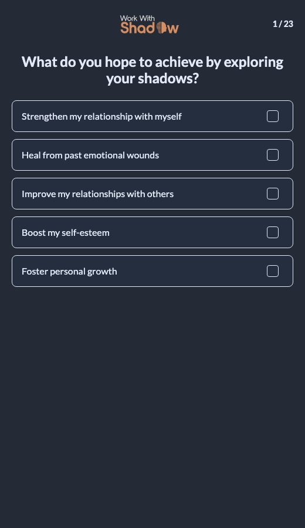
02The homepage scrollworkwithshadow.com
Full mobile scroll · dark hero → education → tools → proof → FAQ → CTA · the design read lives in Part one, entry 06